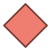
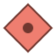
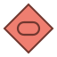
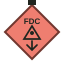
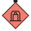

标准化矢量图标 · 可独立引用或通过 SVG sprite 调用
42 个独立素材
unit-friendly
unit-enemyunit-friendly-infantryunit-enemy-infantryunit-friendly-reconunit-enemy-reconunit-friendly-artillery
unit-enemy-artilleryunit-friendly-mechanized
unit-enemy-mechanizedmap-reference-pointmodifier-undergroundmodifier-high-prioritymodifier-building
unit-enemy-fdc
unit-enemy-supplymarker-red-1marker-red-2marker-red-3marker-red-4marker-red-5marker-red-6marker-red-7marker-red-8marker-red-9marker-red-10marker-green-amarker-green-bmarker-green-cmarker-green-dmarker-green-emarker-blue-1marker-blue-2marker-blue-3marker-blue-4marker-blue-5marker-blue-6marker-blue-7marker-blue-8marker-blue-9marker-blue-10iron-nest